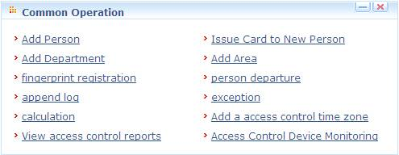
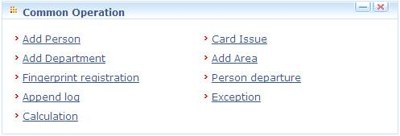
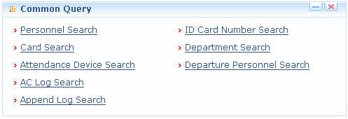
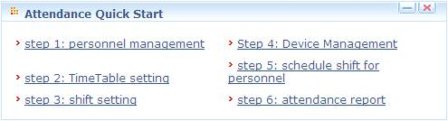
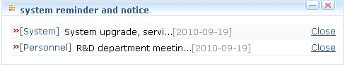
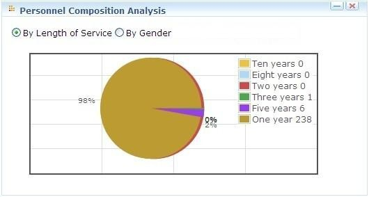
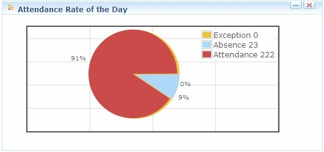

My Panel
After the user log in to the system, it will show the [My Panel] main interface, displaying common operation and other important information.
The default work panel includes the following modules:
Common operation: The user can rapidly perform some common operation here.


New Person please refer to Add Personnel;
Issue Card to New Person, fingerprint registration please refer to Personnel Information Maintenance;
Add Department please refer to Department Management;
Add Area please refer to Add Area ;
Person departure please refer to Personnel adjustment;
Append log please refer to Append log;
Exception please refer to Exception;
Calculation please refer to Attendance calculation;
Append log please refer to Append log;
Exception please refer to Exception;
Calculation please refer to Attendance calculation;
View access control reports please refer to Access Control Reports;
Access control device monitoring please refer to Device Monitoring;
Common query: The user can rapidly conduct some common queries here, including personnel query, ID card number query, card query, department query, attendance device query, departure personnel query, original attendance data query, personnel transfer query and append log query.
Click to conduct corresponding query, which is common query. For advanced query, please enter the original menu, and click [Advanced] query button. For details, see Appendix 1 Common Operation.

Attendance Quick Start: Follow the steps to enter corresponding modules for related operation, thus basically fulfilling attendance functions.

Personnel management please refer to Personnel management;
Timetable setting please refer to Attendance timetable;
Shift setting please refer to Shift management;
Device management please refer to Device management;
Schedule shift for personnel please refer to Scheduling management;
Attendance report please refer to Attendance calculation and reports;
Access Control Quick Start: Follow the steps to enter corresponding modules for related operation, thus basically fulfilling access control functions.
Time zone settings please refer to Access Control Time Zone;
Holidays settings please refer to Access Control Holiday;
Personnel management please refer to Personnel management;
Device management please refer to Device management;
Door configuration please refer to Door settings;
Create access levels please refer to Access levels;
Personnel access levels settings please refer to Personnel Access levels settings;
Real-time monitoring please refer Real-time monitoring;
System reminder and notice: A notice set in [System Settings] can be displayed. In addition, the system automatically filters those people whose birthdays fall on the day and prompts reminders. The information is displayed by category. For details, see 9.5 Notice Management.

Personnel composition analysis: Shows current personnel composition in the system, allowing the display of their proportions by length of service, gender or education background.

Attendance rate of the day: Graphic browsing of key attendance data, intuitively showing personnel attendance on the day, namely, the numbers of people subject to attendance, absent and early leave.

Customize Work Panel:
Click [Customize Work Panel] on the upper right corner to pop up a dialog box. Cancel the tick of your undesired modules (all ticked by default), and click [OK] to complete setting. Now customized modules are displayed;
Or directly click the “” icon on a module to minimize, and click “
To restore the original panel, click [Restore Work Panel] to refresh and return to the system default work panel.